video games
a page for each, with every way to play it
browserplay it nowWiion its wayin developmentstill being worked on
// originals //
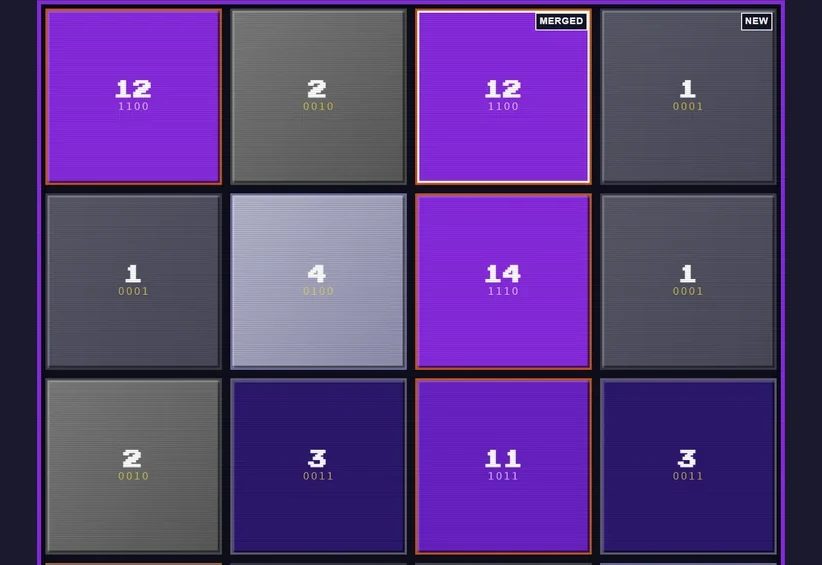
George Boole Has Entered the Chat logic-gate puzzle browserterminalWiiiPhone & iPad ▶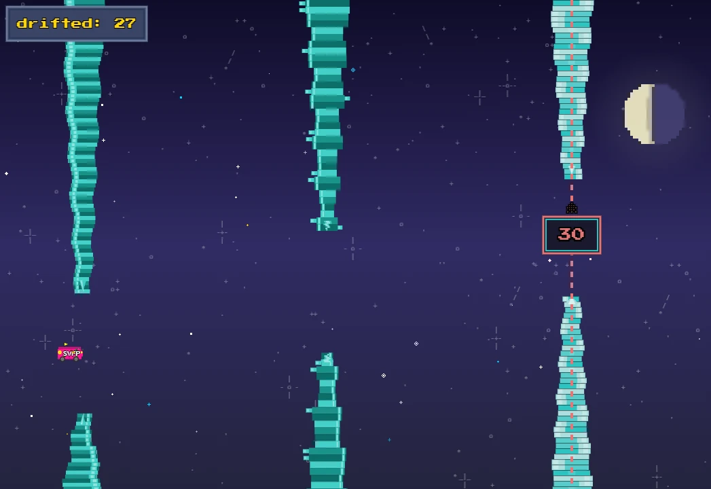
Moonlight Drift cave flyer browserterminalWii ▶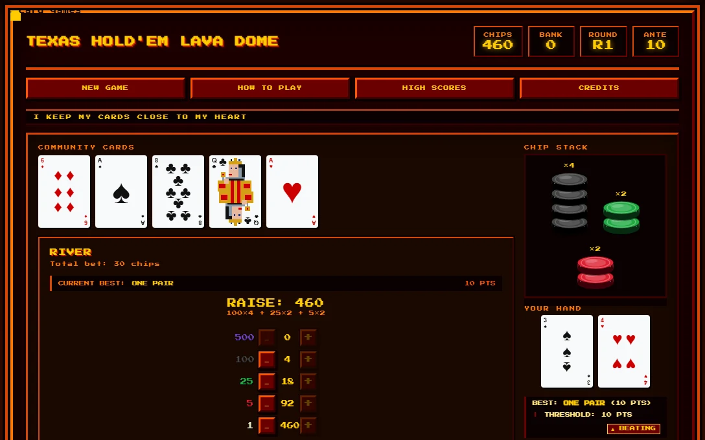
Texas Hold'Em Lava Dome solo poker browserterminalWii ▶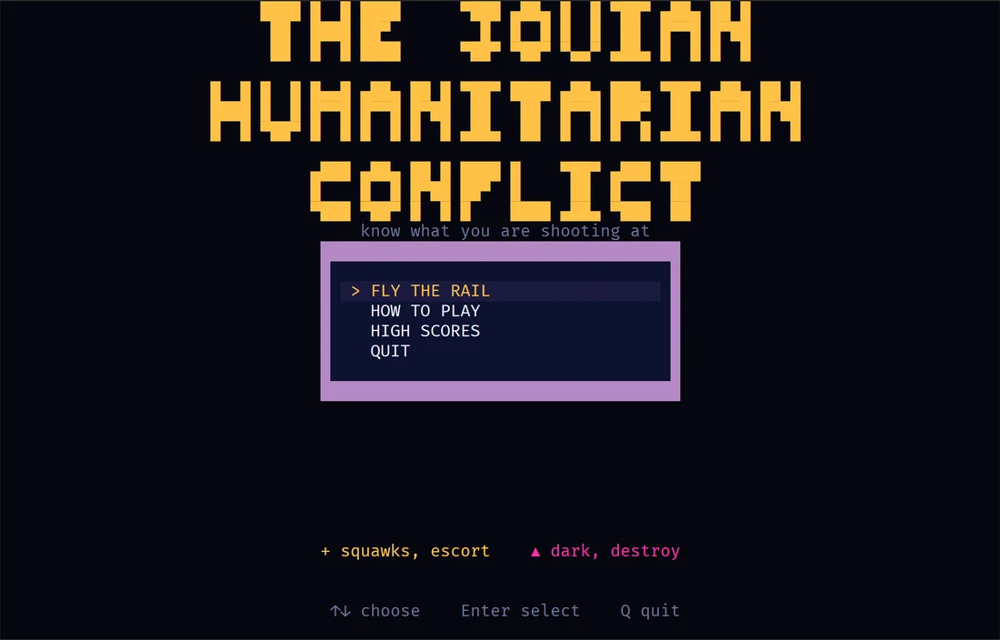
The Jovian Humanitarian Conflict on-rails shooter browserterminalWii ▶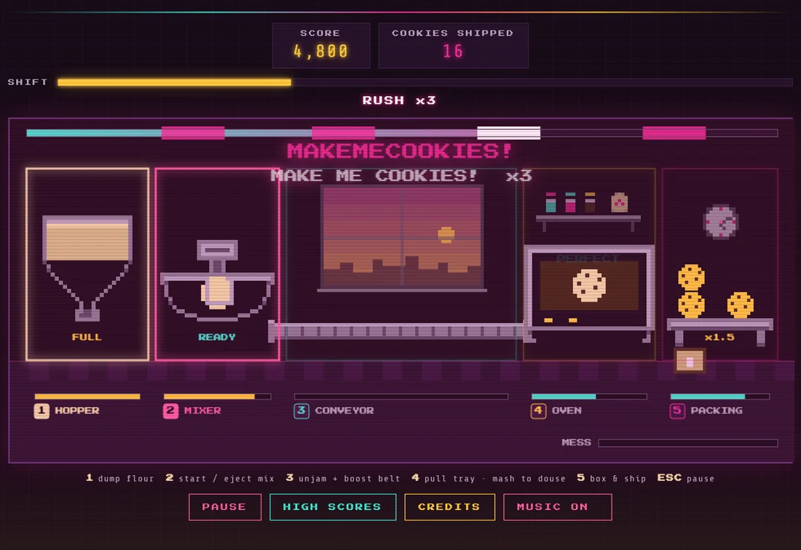
makemecookies!x4 cookie factory browserWiiiPhone ▶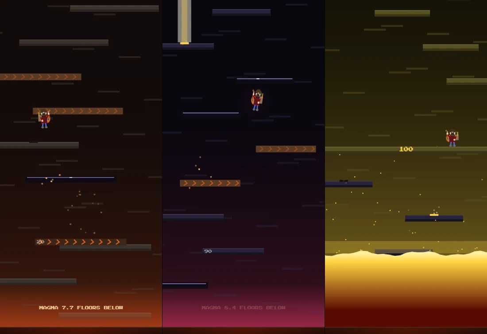
Caldera vertical climber browserterminal ▶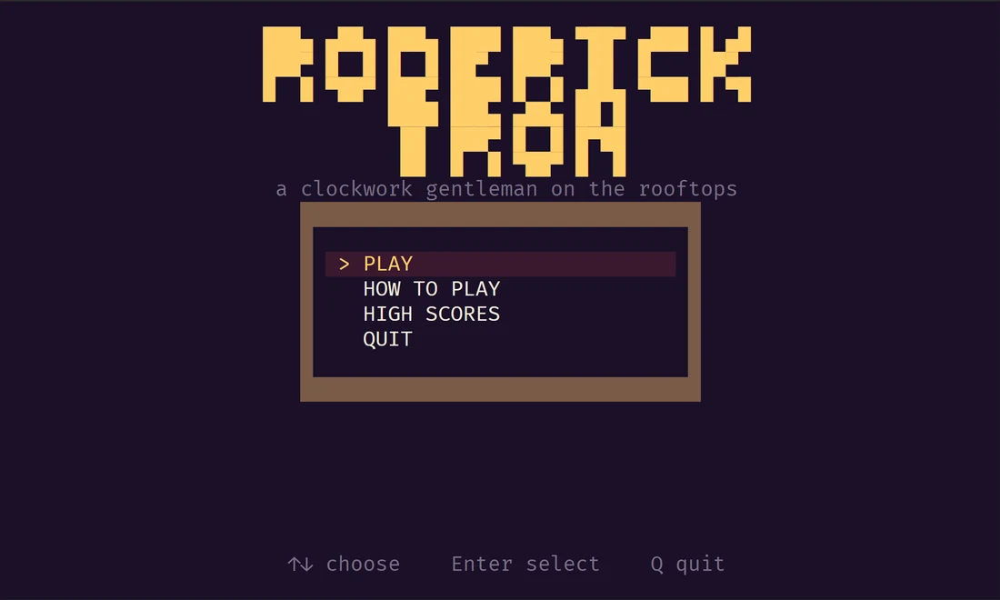
Roderick Tron platformer browserterminal ▶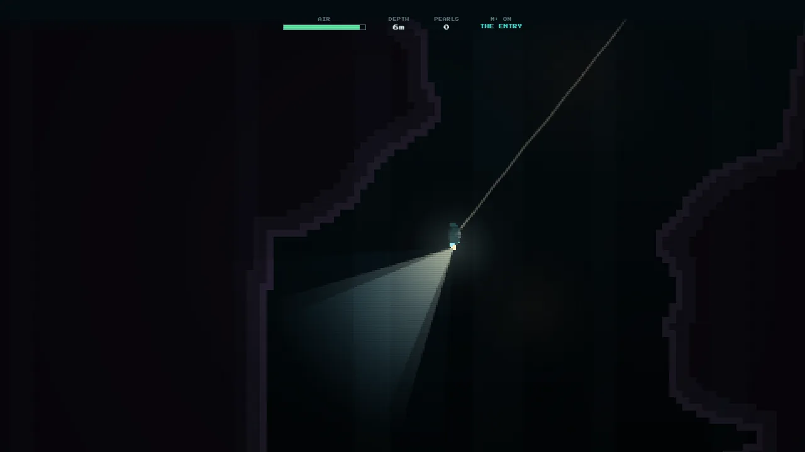
Cave Diving (Not Even Once) one-song cave dive browser ▶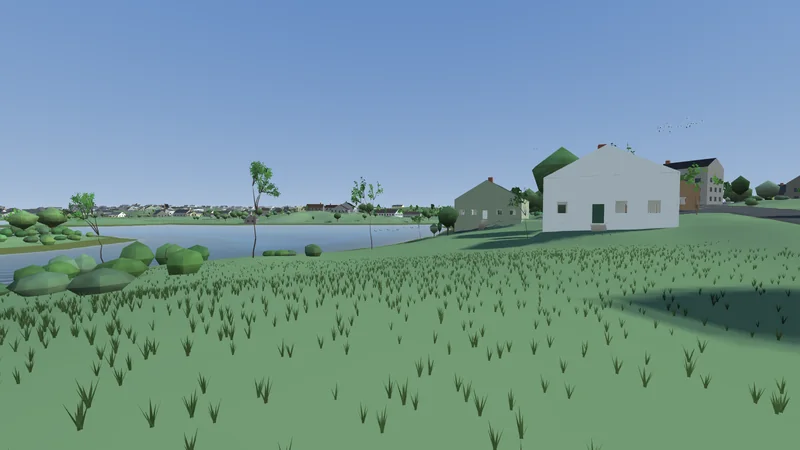
Block Island Simulator open-world exploration desktopbrowser ▶// classics //
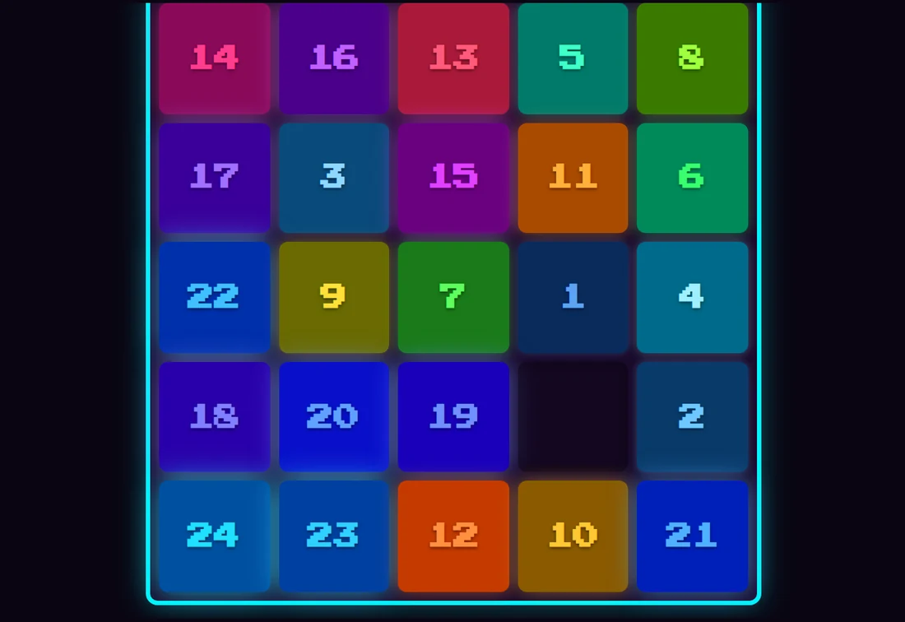
Puzzles 15 puzzle, 2^N, Threes, Klotski browserterminal ▶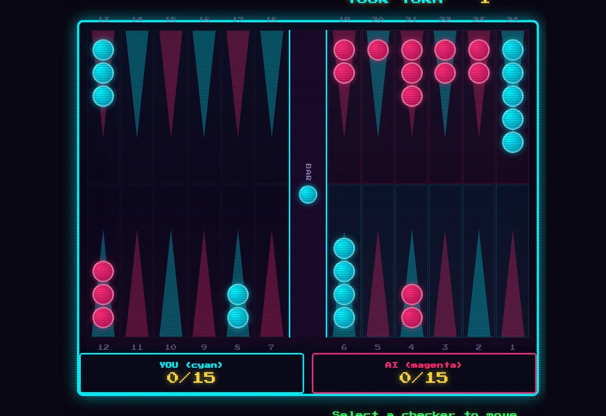
Backgammon board game browserterminal ▶ Checkers
board game
browserterminal
▶
Checkers
board game
browserterminal
▶
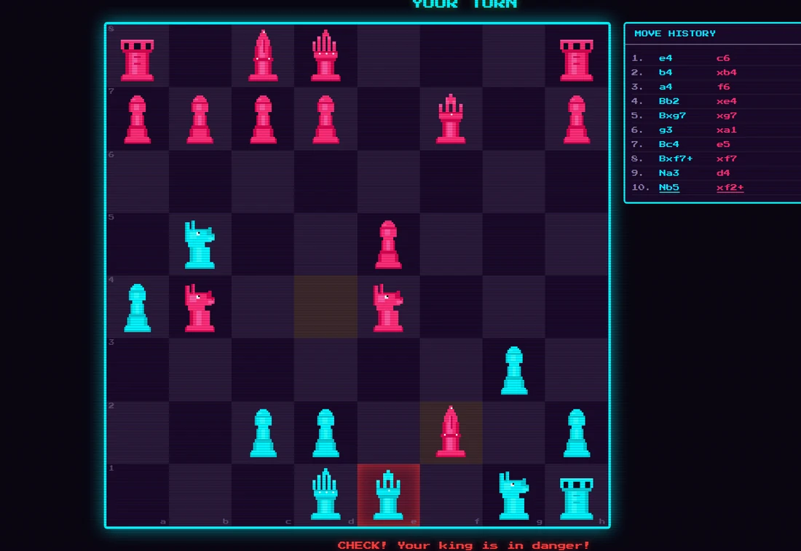
Chess board game browserterminal ▶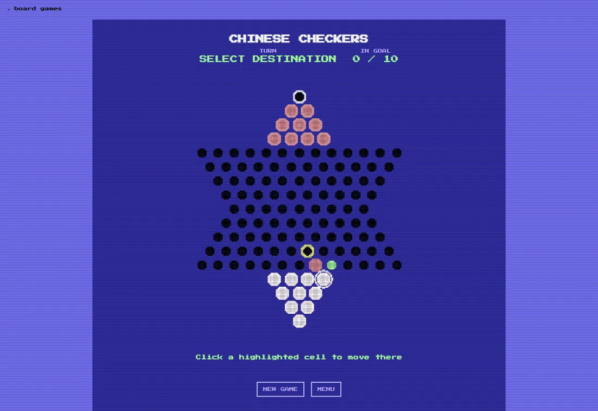
Chinese Checkers board game browserterminal ▶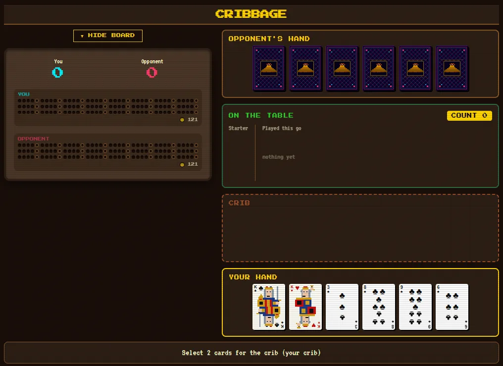
Card Table cribbage, stud, tarot, solitaire browserterminal ▶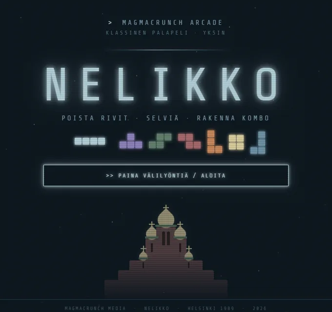
Nelikko falling-block puzzle browserterminal ▶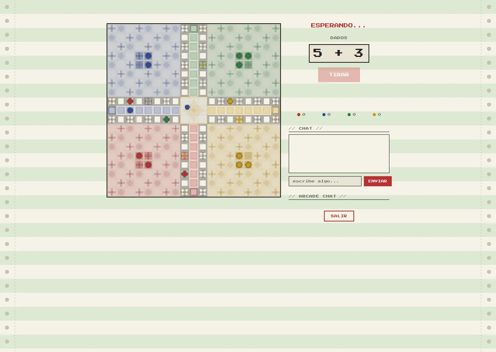
Parchís board game browser ▶